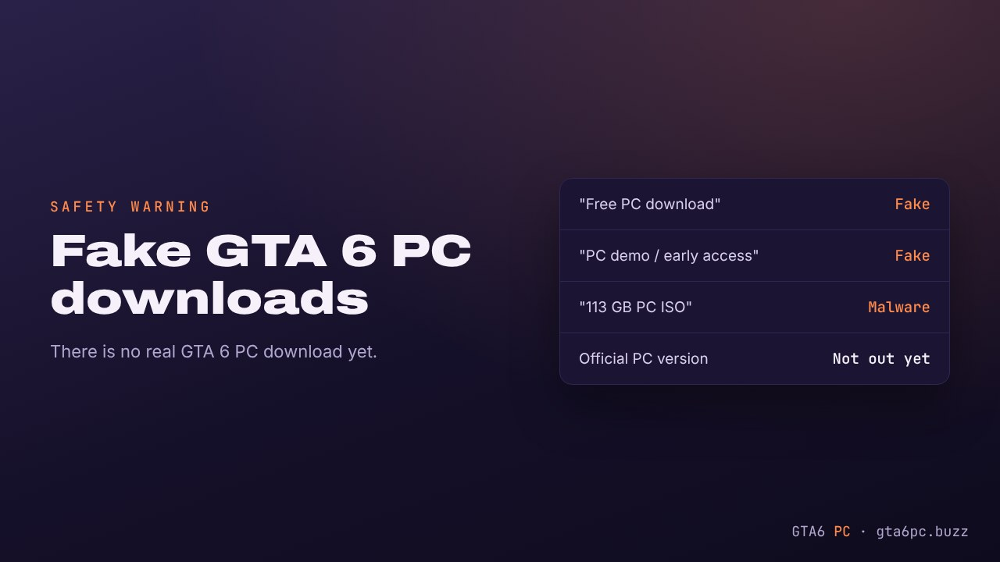
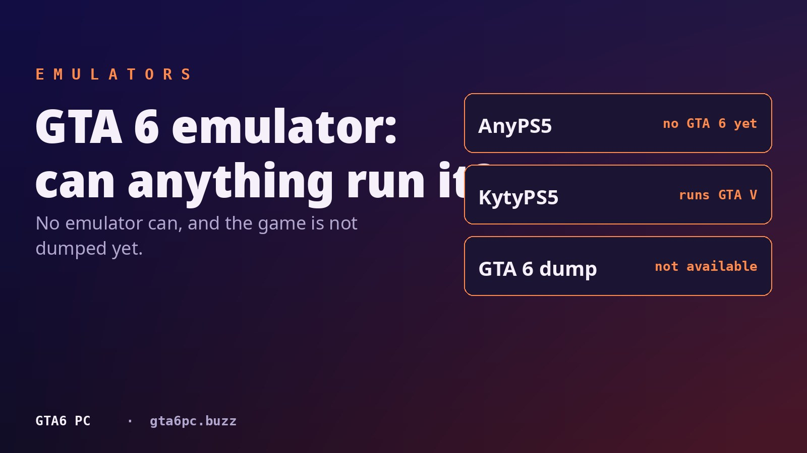
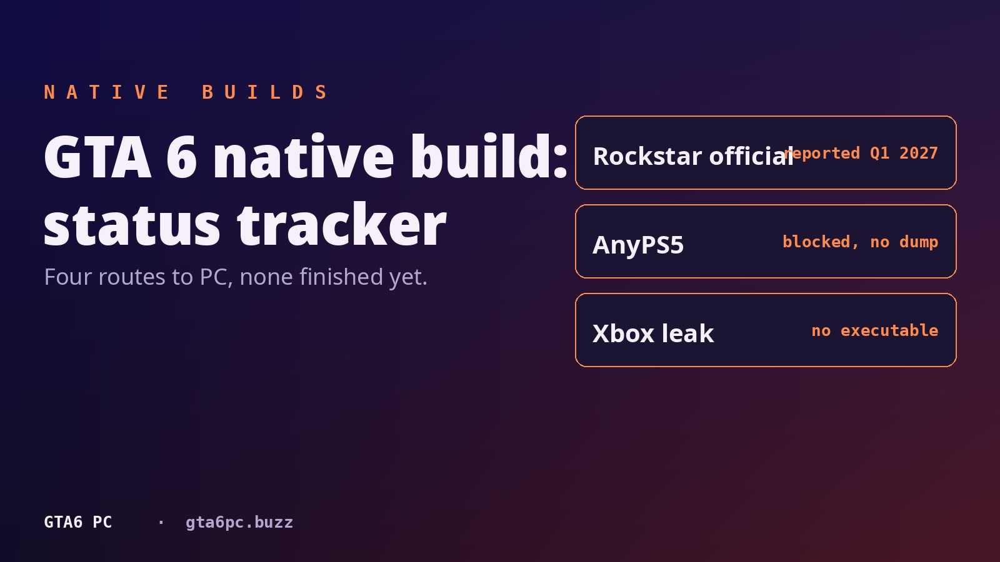
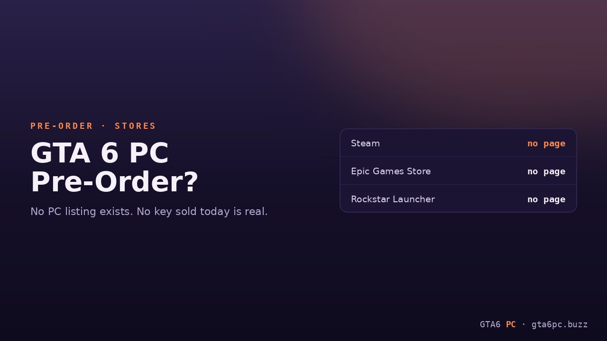

GTA 6 PC news
Release date updates, leak coverage and plain-English explainers for everyone waiting on GTA 6 for PC. Every article links to its sources.
Popular searches: release date · system requirements · PC download · native build tracker · AnyPS5 · PS5 build on PC · emulator · Steam
 Play on PC now
Play on PC nowHow to Play GTA 6 on PC Right Now (Legally): Remote Play Explained
There's no GTA 6 PC version yet, but Rockstar confirmed Remote Play. If you own a PS5 or Xbox Series X|S, you can stream GTA 6 to your PC today. Here's how.
 30 FPS on console
30 FPS on consoleGTA 6 Runs at 30 FPS on Consoles: Why the PC Version Matters
Digital Foundry found GTA 6 targets 30 FPS on every console, even PS5 Pro, with Series S at about 720p. Here's the breakdown and what PC players can expect.
 Cyberleek exe
Cyberleek exeDid Cyberleek Release the GTA 6 Executable? (November 23 Update)
Cyberleek promised to release the missing GTA 6 Xbox executable on November 23, tied to its crypto token. Here's the latest status and what it would and wouldn't change.
 Leonida project
Leonida projectLeonida: The GTA 6 Xbox-to-PC Recompilation Project Explained
Leonida is an open-source project trying to recompile GTA 6's Xbox version to run natively on PC. It has translated 26,503 shaders, but the game doesn't boot yet.
 PS5 dump status
PS5 dump statusHas GTA 6 Been Dumped on PS5? Firmware 14.23 Explained
Sony made PS5 firmware 14.23 mandatory for GTA 6, while public jailbreaks stop at 13.60. Here's why GTA 6 hasn't been dumped and what it means for PC projects.
 Take-Two earnings
Take-Two earningsWhat Take-Two Said About GTA 6 (and PC) in Its Latest Earnings
Take-Two's November 2026 earnings call said GTA 6 pre-orders were far above expectations, but said nothing about a PC version. Here are the key takeaways.
 Sales & PC
Sales & PCGTA 6 Sales Forecasts: Record Pre-Orders and What PC Could Add
Analysts forecast $3.25–5.2 billion in GTA 6's first week. Here's what the pre-order records show, and why a PC release could add a second wave of sales.
 Leaks timeline
Leaks timelineEvery Major GTA 6 Leak: From the 2022 Hack to the Cyberleek Xbox Build
GTA 6 is one of the most-leaked games ever. Here's a timeline of the biggest leaks, from the 2022 development videos to the early trailer and the 2026 Xbox build.
 AnyPS5 & GTA 6
AnyPS5 & GTA 6AnyPS5 and GTA 6: Can PS5 Games Run on PC Without an Emulator?
AnyPS5 is an open-source project that turns PS5 games into native PC programs. Here's how it works, how far it's got, and why GTA 6 isn't running on it.
 When on PC?
When on PC?When Is GTA 6 Coming to PC? Release Date Status (November 2026)
GTA 6 is out on PS5 and Xbox Series X|S, but Rockstar hasn't set a PC date. Here's the reported Q1 2027 window, what Rockstar's history suggests, and what to watch for.
 PC launch
PC launchGTA 6 PC Launch: What to Expect When It Arrives
What the GTA 6 PC launch will probably look like: which stores, which PC features, what hardware you'll need, and which claims to ignore until Rockstar confirms them.
 PC leaks
PC leaksGTA 6 PC Leak Explained: The Cyberleek Xbox Build and What's Real
A hacker group says it leaked a near-complete GTA 6 Xbox build. Here's what was released, whether it can run on PC, the fake videos going around, and the malware risk.
 Built for PC
Built for PCIs GTA 6 Built for PC? Native Port vs Emulation vs Recompilation
"Native PC build", "emulated" and "recompiled" mean very different things. Here's what each one means for GTA 6, and which kind of PC version is actually real.
 Xbox build on PC
Xbox build on PCCan the Leaked GTA 6 Xbox Build Run on PC? (November 2026)
A leaked GTA 6 Xbox build has people asking whether it can run on Windows. Here's why it can't yet, what stands in the way, and why fake download sites are the real danger.
 System requirements
System requirementsGTA 6 PC System Requirements: What We Know and What to Expect
Rockstar hasn't published GTA 6 PC requirements yet. Here's what the console hardware tells us, our estimated specs, and how much storage to plan for.
 PC price
PC priceGTA 6 PC Price: How Much Will It Cost? (Editions Explained)
GTA 6 costs $79.99 on PS5 and Xbox, with a $99.99 Ultimate Edition. Here's what that means for the PC price, and why you shouldn't buy PC keys yet.
 GTA 6 Online
GTA 6 OnlineGTA 6 Online on PC: Release Date and What We Know
GTA 6 launched without an online mode. Reports point to a 2027 release for GTA 6 Online. Here's what that means for PC players and GTA Online.
 File size
File sizeGTA 6 File Size: How Many GB on PS5, Xbox and PC?
GTA 6 is reported to be about a 210 GB download on PS5. Here's what that means for Xbox Series S owners, and how much space to plan for on PC.

Scam warningFake GTA 6 PC Downloads: How to Spot the Scams and Stay Safe
There is no GTA 6 PC download. Fake installers, demos and ISOs are spreading infostealers and ransomware. Here's how to spot them and what to do if you clicked one.
 PC vs console
PC vs consoleGTA 6: Wait for PC or Play on PS5/Xbox Now?
GTA 6 is out on PS5 and Xbox, while PC is reportedly coming in early 2027. Here's how to decide whether to wait, based on what Rockstar's PC versions usually add.
 Mods & FiveM
Mods & FiveMGTA 6 PC Mods and FiveM Roleplay: What to Expect
Mods and roleplay servers kept GTA V alive on PC for over a decade. Rockstar bought the FiveM team in 2023. Here's what that could mean for GTA 6 on PC.
 Rockstar PC history
Rockstar PC historyEvery Rockstar PC Port and What It Says About GTA 6 on PC
From GTA IV to Red Dead Redemption 2, here's how long Rockstar's PC versions took, how they launched, and what that history suggests for GTA 6 on PC.

PC emulatorGTA 6 PC Emulator: Can a PS5 or Xbox Emulator Run It?
No PS5 or Xbox Series emulator can run GTA 6 today. Here is what AnyPS5, KytyPS5 and the other projects can actually do, why GTA 6 is blocked at the first step, and how to judge the next claim.
 PS5 build on PC
PS5 build on PCDid the GTA 6 PS5 Build Run on PC? The Trending Claim, Checked
Posts claim a GTA 6 PS5 build is now running on PC. We checked the tracker data, the firmware blocker and the viral videos. Here is what has actually run on PC, and what has not.

Native build statusGTA 6 PC Native Build: Status Tracker (November 2026)
Tracking every route to a native GTA 6 build on PC: Rockstar's official version, AnyPS5 native conversion, KytyPS5, and the leaked Xbox build, with what is done, what is blocked, and what to watch next.
 On Steam?
On Steam?GTA 6 on Steam: A Suspicious App Page Appeared, But It Is Not Rockstar's Game
A Grand Theft Auto 6 page appeared on Steam around launch and was flagged as suspicious by SteamDB. Here is what the listing is, why it is not Rockstar's game, and how to tell a real Steam page from a fake one.
 Best PC build
Best PC buildBest PC Build for GTA 6: Budget, Mid-Range and High-End (Estimates)
No official GTA 6 PC requirements exist, so these builds are honest estimates from the console hardware: a budget 1080p build, a mid-range 1440p build, and a high-end 4K build, plus the storage every build needs.
 Fake videos
Fake videosFake GTA 6 PC Videos: The GTA 5 Hoax and the RTX 5080 Clip
A viral GTA 6 PC port video turned out to be GTA V footage. Another claims 25 fps on an RTX 5080 and is unverified. Here are the three fakes doing the rounds and a checklist that catches all of them.
 Modders race
Modders raceGTA 6 Xbox Leak: Modders Race to Beat Rockstar to PC
A claimed 209 GB Xbox build leak has modders racing to run GTA 6 on PC before Rockstar's official version, a story now drawing reaction videos with millions of views. Here is what the race actually looks like.
 PC Game Pass?
PC Game Pass?Will GTA 6 Come to PC Game Pass? What Microsoft, Rockstar and Take-Two Have Said
GTA 6 is not on Xbox Game Pass or PC Game Pass, and no inclusion has been announced. Here is what the stores show, why Take-Two avoids day-one subscription releases, and when a Game Pass debut could realistically happen.
 PC crossplay?
PC crossplay?Will GTA 6 on PC Have Crossplay with PS5 and Xbox?
GTA 6 launches as a single-player game with no online mode and no crossplay announced. Here is what GTA Online's history says about crossplay, and what PC players should expect.

PC pre-order?Can You Pre-Order GTA 6 on PC? What the Stores Actually Show
There is no GTA 6 PC pre-order anywhere. No Steam, Epic or Rockstar Launcher page exists, and no PC keys are real. Here is what the stores show and when a real pre-order could open.